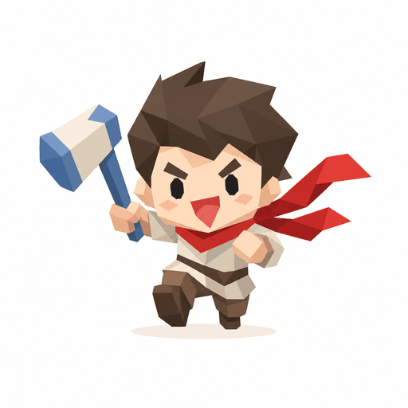
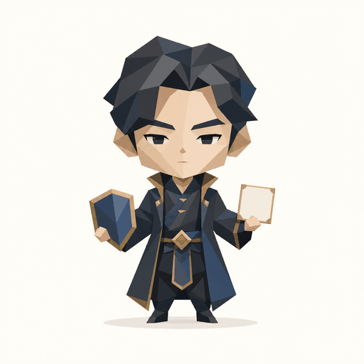
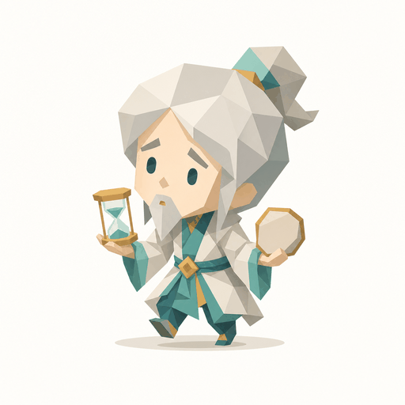

GPTI H5 UI OPTIONS · FIRST PASS
围绕“异界开局人格测试”的三套移动端视觉方向
这页只用于选择 UI 方向。三套方案都保留现有 GPTI 内容、24 题流程、16 型主结果、隐藏特质与分享闭环，不改题目、选项、结果文案、评分体系或 CloudBase 统计口径。
选择口径
先选视觉和信息层级，再进入正式页面实现。
若只做样式与布局，不需要提升 contentVersion。
若后续改动分享文案、题目或结果说明，再单独确认 contentVersion。
方案 A
档案局终端：保留暗色沉浸感，降低噪音
延续当前“异界档案终端”的识别度，把扫描线和高对比边框收敛，强化开始、进度、选择反馈和结果分区。适合最小风险推进，代码改动集中在 CSS 与少量 class。
适合
想最快从当前版本打磨到更稳的移动端体验。
首页和题目页变化明显，结果页维持暗色档案卡。
首页
ARCHIVE 24
default_channel
异界档案终端
异界开局人格测试
24 题生成你的游戏灵魂职业
你醒来的时候，天已经黑了。手边只有一枚生锈的徽章、一张写着你名字的通缉令，和远处正在燃烧的城门。
开始冒险
查看规则
题目页
第一章 · 醒来
03 / 24
陌生队伍邀请你同行，你第一反应是？
A先确认谁能打，谁会拖后腿。
B观察队伍气氛，再决定站位。
C问清目标和报酬，别白跑。
D先跟上，路上再看有没有岔路。
上一题
下一题
结果页
稀有档案
NO. ARCHIVE-024

狂战士
你一进异界，地图先替怪物紧张。
隐藏特质
临场爆发：越是混乱，越容易抢到先手。
临场爆发：越是混乱，越容易抢到先手。
隐藏天赋混乱里抢先手
致命弱点把警告牌当欢迎牌
生成分享图
重新测试
首页重点减少装饰线，把第一屏重心放在标题、简短开局和开始按钮。
题目重点保留章节与进度，但选择卡片更安静，选中态更明确。
结果重点主结果、隐藏特质、分享动作层级更清楚。
方案 B
人物卡卷宗：让新头像成为视觉中心
围绕已接入的 MBTI 人物卡式头像重建层级。整体更明亮、更像“可传播的人格卡”，但仍保留异界档案文本，不变成泛泛测试页。适合强化结果页传播和截图识别度。
适合
想让 16 张头像资源发挥最大价值。
结果页会最明显提升，首页也会更轻、更易读。
首页
24 题
游戏人格
异界开局人格测试
从第一件装备、第一段同行、第一场危机里，生成你的游戏灵魂职业。
开始冒险
继续上次
查看规则
题目页
危机章
11 / 24
当前抉择
宝箱旁边有明显机关，你会怎么做？
A让队友退后，我先试一下。
B先绕一圈，找触发逻辑。
C算损耗和收益，再决定开不开。
D标记位置，等装备够了再回来。
上一题
下一题
结果页
异界职业档案
稳定度 83%

幕后军师
你没站在前排，但局面听你的。
短解释
你习惯先把信息拼成图，再让行动落在最稳的地方。
你习惯先把信息拼成图，再让行动落在最稳的地方。
隐藏特质
低调控场：别人以为你没动，其实你已经排完退路。
低调控场：别人以为你没动，其实你已经排完退路。
生成分享图
复制文案
重新测试
首页重点用角色头像暗示“测完会拿到一张人格卡”，但开始按钮仍在第一屏。
题目重点题干单独成区，减少背景干扰，选项像可点的档案条目。
结果重点头像、职业名、判词、隐藏特质和分享动作形成清晰传播卡。
方案 C
异界路线图：把 24 题做成一次开局旅程
强化“开局冒险”的流程感，用路线、章节和据点感组织首页与题目页。结果页像一份从旅途中结算出的职业档案。视觉沉浸更强，但正式实现需要更细地控制移动端高度。
适合
想让测试过程更像一局开局冒险。
改动比 A、B 更大，建议选定后分两批落地。
首页
开局路线
四章 · 24 题
你醒在一座没有地图的城外
每次选择都会把路线推向不同职业档案。
第一章：醒来
第二章：同行
第三章：危机
第四章：结算
第二章：同行
第三章：危机
第四章：结算
开始冒险
继续上次
查看规则
题目页
同行路线
08 / 24
路口事件
队伍意见分裂，你会先处理什么？
A先做决定，拖久了更危险。
B先确认每个人真正担心什么。
C拆成目标、资源和风险。
D换条路线，避开正面冲突。
上一题
下一题
结果页
旅程结算
NO. ARCHIVE-024

时间旅者
你不是拖延，你是在等另一条时间线变得可走。
职业谱系漫游观察位
隐藏特质慢热预判
你的冒险节奏不急，但总会在别人没注意的岔路上找到新的可能。
查看人格细节
生成分享图
复制分享文案
首页重点第一屏直接说明测试是一次 24 题路线，不铺营销信息。
题目重点章节进度从“数字”变成路线感，但仍保持触控清晰。
结果重点把主结果当作旅程结算，适合后续做分享图统一风格。